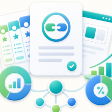

Una propuesta comercial para posicionar Saldify como producto SaaS, white-label o alianza estrategica.
1. Resumen Ejecutivo
SaldiFY es una plataforma digital para administrar redes comerciales de anfitriones, vendedores, clientes e invitados, con control de credito, compras, pagos, carrito, catalogo, historial, invitaciones y seguimiento operativo. El producto fue desarrollado con apoyo de inteligencia artificial aplicada al analisis funcional, diseno de interfaz, generacion asistida de codigo, documentacion y validacion de flujos. La solucion no parte de una plantilla generica: se construyo sobre una plataforma propietaria Venture/SMX con mas de 17 anos de evolucion, actualmente llevada a Flutter y conectada a un servidor propio de servicios web. El objetivo comercial de SaldiFY es ofrecer a negocios, distribuidores, mayoristas, vendedores independientes y redes comerciales una herramienta para organizar su operacion diaria de credito y ventas sin depender de hojas de calculo, mensajes sueltos o controles manuales.
2. Potencial Comercial
SaldiFY atiende una necesidad muy comun en Mexico y Latinoamerica: redes de venta, credito y cobranza que operan de manera informal o semiestructurada. Muchos negocios venden a credito, trabajan con distribuidores, revendedores, clientes frecuentes o grupos de vendedores externos. Sin embargo, suelen llevar el control en libretas, Excel, WhatsApp o sistemas administrativos que no entienden la relacion de red. SaldiFY esta pensado para ese espacio:
- un anfitrion puede administrar clientes;
- un cliente puede participar como invitado;
- ese mismo cliente puede convertirse en anfitrion de su propia red;
- una red puede crecer por invitaciones;
- un anfitrion/cliente puede cambiar de red conservando su arbol descendente;
- el credito, las compras, pagos, carrito, productos e historial se mantienen
dentro de la relacion comercial correspondiente. Esto abre potencial para modelos SaaS de bajo costo mensual, white-label para empresas de software, integracion a portafolios existentes o comercializacion por alianzas con despachos, distribuidores, comercios, redes de venta directa y proveedores de sistemas administrativos.
3. Diferenciador Frente al Mercado
Existen productos de punto de venta, ERP, CRM, cobranza, catalogos digitales, carritos y sistemas de facturacion. Sin embargo, SaldiFY combina en una sola logica varios elementos que normalmente estan separados:
- red comercial de anfitrion, cliente e invitado;
- usuario con doble rol: cliente de una red y anfitrion de otra;
- arbol de vendedores/clientes con descendientes;
- traslado de red conservando el subarbol;
- credito asignado por relacion;
- compras y pagos ligados a la relacion comercial;
- compra manual, compra por carrito y catalogo;
- catalogo propio, libre o heredado por decision del anfitrion/cliente;
- reputacion visual por estrellas en el dashboard;
- invitaciones por codigo o enlace;
- historial de movimientos;
- administracion por anfitrion o por invitado segun el estado de la relacion.
El valor principal no esta solo en las pantallas, sino en la combinacion de:
red comercial + credito + pagos + compras + catalogo + invitaciones + operacionesEsa combinacion hace que SaldiFY pueda funcionar como producto independiente o como modulo especializado dentro del portafolio de una empresa de software.
4. Valores Diferenciales del Producto
4.1 Compra Multimodal
SaldiFY no obliga al usuario a comprar de una sola forma. La plataforma permite operar distintos estilos de compra segun la realidad del negocio:
- compra manual por requerimiento del invitado o cliente;
- captura de concepto, cantidad e importe cuando el cliente ya sabe lo que
necesita y cuanto cuesta;
- posibilidad de adjuntar imagen o evidencia;
- compra por carrito cuando existe catalogo de productos;
- compra asistida por el anfitrion cuando el negocio administra la operacion
por cuenta del cliente. Esto permite atender negocios estructurados y tambien operaciones reales donde la venta inicia por una solicitud libre, una foto, un mensaje o un acuerdo directo entre cliente y anfitrion.
4.2 Catalogo Propio, Libre o Heredado
El catalogo no es una imposicion vertical. Cada anfitrion puede operar de tres formas:
- sin catalogo, usando compra manual/libre;
- con catalogo propio;
- heredando el catalogo de su anfitrion superior.
Lo mas importante es que un cliente que tambien actua como anfitrion puede decidir si hereda o no el catalogo de su anfitrion. Si decide heredarlo, ese catalogo puede propagarse por su red descendente, siempre que los siguientes anfitriones tambien lo adopten. Esto convierte el catalogo en una herramienta de expansion comercial. Un mayorista puede ofrecer productos; un distribuidor puede decidir adoptar ese catalogo; y su red puede vender usando la misma base de productos sin duplicar captura ni perder trazabilidad.
4.3 Red Democratica y No Impositiva
La red de SaldiFY esta disenada para que el usuario conserve autonomia. El anfitrion superior no condiciona de forma absoluta al cliente/anfitrion que esta debajo. Un cliente puede:
- pertenecer a una red como invitado;
- operar su propia red como anfitrion;
- decidir si usa catalogo propio, libre o heredado;
- decidir si cambia a otra red cuando la operacion comercial lo permite;
- conservar su arbol descendente cuando se mueve a otra red.
Esto hace que la red sea mas cercana a una estructura comercial viva que a una jerarquia rigida. La decision final sobre su operacion la conserva el cliente/anfitrion, no necesariamente el anfitrion principal.
4.4 Ranking y Valorizacion del Anfitrion
SaldiFY incorpora una logica de valorizacion visual del anfitrion mediante estrellas en el dashboard. La idea es similar a una reputacion comercial: entre mas fuerte sea la red y mejor sea su comportamiento operativo, mayor sera la valorizacion del anfitrion. Los indicadores que pueden alimentar esa valorizacion incluyen:
- tamano de la red;
- crecimiento de clientes;
- credito total asignado;
- volumen de compras;
- volumen de pagos;
- saldo y disponible;
- comportamiento de cobranza;
- calidad de cartera;
- actividad operativa de la red.
La app puede calcular estos indicadores automaticamente a partir de las metricas de la red. Esto convierte el dashboard en algo mas que una pantalla administrativa: tambien funciona como indicador de reputacion, solidez y potencial comercial del anfitrion.
5. Plataforma Tecnologica
SaldiFY reutiliza y extiende una plataforma propietaria Venture/SMX con mas de 17 anos de evolucion. Esta plataforma funciona como base de arquitectura, comunicacion, datos y metodologia. La capa actual usa Flutter para la experiencia visual y componentes moviles/web, pero no se comporta como una app Flutter generica. Trabaja sobre una metodologia propia basada en:
- `SmxController`;
- `SmxRowSet`;
- aliases de consulta;
- rowsets transaccionales;
- webservices propietarios;
- estructura de base de datos con nomenclatura `SYSUSERxx`;
- stored procedures y queries especializadas;
- widgets ligados directamente a campos del rowset;
- orquestacion por JSON de `SmxRowSet`.
La base de datos conserva la nomenclatura, reglas y estructura. El JSON del `SmxRowSet` opera como orquestador entre la app, los widgets, los controladores, el servidor de servicios web y la base de datos. Arquitectura conceptual:
Base de datos
-> tablas SYSUSERxx / QRY_ / ADD_ / UPDATE_
-> reglas de negocio y rowsets
Servidor propietario de servicios web
-> recibe solicitudes
-> ejecuta consultas/transacciones
-> devuelve JSON de SmxRowSet
Flutter / SaldiFY
-> SmxController
-> SmxRowSet
-> widgets SMX
-> pantallas, flujos y experiencia de usuarioEsta arquitectura reduce la duplicacion de modelos, evita resolver reglas complejas en la interfaz y permite que la base sea la fuente principal de verdad.
6. Valor Agregado de Haber Sido Desarrollado con IA
SaldiFY se desarrollo con asistencia de inteligencia artificial en distintas fases del proceso:
- conceptualizacion de flujos anfitrion/cliente;
- exploracion de UX y diseno de interfaces;
- creacion de mockups iniciales;
- implementacion asistida de pantallas;
- revision de consistencia entre controladores, rowsets y widgets;
- documentacion tecnica y funcional;
- analisis de reglas de red comercial;
- depuracion de escenarios de invitacion, credito, pagos y catalogo;
- generacion de documentacion para asistente interno de ayuda.
La IA no reemplazo la plataforma propietaria ni la experiencia de negocio. Su valor fue acelerar el analisis, reducir iteraciones, documentar decisiones y ayudar a convertir ideas funcionales en codigo y arquitectura. El resultado es un producto construido en aproximadamente mes y medio, pero con un esfuerzo equivalente considerablemente mayor si se hubiera desarrollado de forma individual, manual, con diseno, pruebas, control de calidad y documentacion completa.
7. Alcance Funcional Actual
SaldiFY contempla los siguientes modulos y capacidades:
- logon y acceso por Google;
- modo anfitrion;
- modo invitado/cliente;
- dashboard anfitrion;
- dashboard cliente;
- perfil anfitrion/cliente;
- invitaciones por codigo o enlace;
- clientes activos;
- clientes pendientes;
- clientes archivados;
- red de venta / arbol de invitados;
- credito por relacion;
- plan de pago y corte;
- compras manuales;
- compras por carrito;
- solicitud libre con concepto, importe y evidencia;
- pagos;
- confirmacion y rechazo de movimientos;
- historial;
- catalogo de productos;
- catalogo propio o heredado;
- propagacion de catalogo por red cuando el anfitrion/cliente decide heredarlo;
- ranking/valorizacion visual por estrellas;
- metricas de credito, compras, pagos, saldo y disponible;
- documentacion de pantallas para asistente de IA;
- arquitectura documentada para continuidad tecnica.
8. Modelo SaaS Potencial
Para usuario final, el precio de mercado mas razonable en Mexico estaria en un rango bajo de suscripcion mensual. El cliente invitado deberia entrar gratis para no frenar la viralidad de la red. Modelo sugerido:
Invitado / cliente final: gratis
Anfitrion basico: $99 MXN / mes
Anfitrion Pro: $149 MXN / mes
Negocio / multiusuario: $249 - $399 MXN / mes
White-label / empresa: precio especial o revenue shareLa estrategia recomendada es cobrar al anfitrion, porque es quien obtiene el beneficio administrativo directo: control de clientes, credito, compras, pagos, carrito, catalogo e historial.
9. Punto de Equilibrio Comercial
Con un precio principal de $149 MXN mensuales por anfitrion, el punto de equilibrio depende del costo de adquisicion de cliente, soporte, servidores, equipo tecnico y marketing. Estimacion operativa:
Precio mensual por anfitrion: $149 MXN
Costo variable estimado: $15 - $30 MXN
Margen bruto estimado: $119 - $134 MXN por anfitrionClientes pagos requeridos para equilibrio mensual:
| Gasto fijo mensual | Anfitriones pagos aproximados |
|---|---|
| $250,000 MXN | 2,000 |
| $400,000 MXN | 3,200 |
| $600,000 MXN | 4,800 |
| $1,000,000 MXN | 8,000 |
Si el costo de adquisicion por anfitrion se mantiene entre $100 y $300 MXN, el negocio puede recuperar la inversion comercial rapidamente y reinvertir su propio flujo. Si el costo de adquisicion sube por encima de $800 MXN, la expansion requeriria mayor capital y un ciclo de recuperacion mas largo.
10. Alternativas Comerciales
Las siguientes alternativas consideran un escenario en el que una empresa desea integrar SaldiFY a su portafolio de productos con su imagen, logo, paleta de colores y comunicacion comercial. Todas las opciones deben formalizarse por contrato.
Opcion 1: Sociedad Comercial 60/40
Modelo recomendado cuando el socio comercial quiere impulsarlo activamente como producto propio dentro de su portafolio. Condiciones propuestas:
- El producto se publica con marca, imagen, logo y paleta del socio comercial.
- Rebranding inicial: $100,000 MXN + IVA.
- Reparto comercial: 60% socio comercial / 40% desarrollador.
- Base de calculo: ingresos efectivamente cobrados menos IVA.
- No se descuentan gastos internos de ventas, nomina, publicidad,
administracion ni soporte comercial del socio, salvo acuerdo expreso.
- El desarrollador conserva la propiedad tecnologica del producto base.
- El socio comercial opera ventas, facturacion, cobranza y atencion comercial.
- El desarrollador mantiene soporte tecnico del producto base.
- Cuota mensual de infraestructura/plataforma: $15,000 a $25,000 MXN + IVA,
mientras el producto opere sobre servidores y webservices Venture/SMX del desarrollador.
- Modificaciones nuevas, integraciones o funcionalidades no existentes se
cotizan aparte. Recomendacion: Si se otorga exclusividad, debe existir un minimo garantizado de ventas o de ingresos. Si no se cumple, la exclusividad se pierde.
Opcion 2: Venta o Licencia Amplia del Producto
Modelo recomendado cuando el comprador quiere adquirir el producto con mayor control comercial, sin depender de un reparto mensual. Rango propuesto:
$650,000 a $800,000 MXN + IVACondiciones sugeridas:
- Incluye rebranding inicial basico.
- Incluye entrega del producto para integrarlo al portafolio comercial.
- Incluye transferencia tecnica limitada.
- Incluye soporte tecnico inicial por 30 a 60 dias.
- Cuota mensual de infraestructura/plataforma: $15,000 a $25,000 MXN + IVA,
mientras el producto opere sobre servidores y webservices Venture/SMX del desarrollador.
- Modificaciones nuevas se cotizan aparte.
- La propiedad del core Venture/SMX, librerias propietarias o componentes base
no se transfiere salvo contrato especifico. Nota: Si el comprador solicita propiedad total, exclusividad, derecho de sublicenciar o control completo del codigo fuente como activo propio, el valor debe subir por encima de este rango.
Opcion 3: White-label de Entrada + Revenue Share 80/20
Modelo recomendado para reducir la barrera de entrada del socio comercial sin regalar el producto. Condiciones propuestas:
- Licencia white-label inicial: $200,000 MXN + IVA.
- Incluye marca, logo, paleta de colores y despliegue inicial.
- Reparto comercial: 80% socio comercial / 20% desarrollador.
- Base de calculo: ingresos efectivamente cobrados menos IVA.
- El desarrollador conserva la propiedad del codigo y producto base.
- Cuota mensual de infraestructura/plataforma: $15,000 a $25,000 MXN + IVA,
mientras el producto opere sobre servidores y webservices Venture/SMX del desarrollador.
- Modificaciones nuevas se cotizan aparte.
- Soporte comercial y atencion al cliente final quedan a cargo del socio
comercial, salvo acuerdo distinto. Recomendacion: Esta opcion no debe incluir exclusividad libre. Si el socio comercial pide exclusividad, debe existir minimo garantizado mensual o anual. Si no se cumple, la licencia puede continuar, pero sin exclusividad.
11. Condiciones Comunes Recomendadas
Para cualquiera de las opciones anteriores, se recomienda establecer:
- Que se entiende por ingresos cobrados.
- Que impuestos se excluyen antes de calcular porcentajes.
- Que devoluciones o cancelaciones se pueden descontar.
- Si las comisiones de pasarela de pago se descuentan o no.
- Quien factura al cliente final.
- Quien da soporte comercial.
- Quien da soporte tecnico.
- Quien paga infraestructura.
- Que cambios estan incluidos y cuales se cotizan aparte.
- Si existe exclusividad.
- En que territorio o segmento aplica la exclusividad.
- Que minimo de ventas mantiene la exclusividad.
- Si el socio puede sublicenciar.
- Si puede venderlo como activo propio.
- Que ocurre al terminar el contrato.
Regla recomendada para porcentajes:
Los porcentajes se calculan sobre ingresos efectivamente cobrados y conciliados,
menos IVA, devoluciones y, si se acuerda, comisiones directas de pasarela de
pago.No se recomienda calcular porcentajes sobre utilidad neta si no existe una definicion contable muy estricta y auditable.
12. Cuota Mensual de Infraestructura y Plataforma
La cuota mensual de infraestructura es independiente del precio de venta, licencia, rebranding, revenue share, soporte comercial o desarrollos nuevos. Esta cuota aplica cuando SaldiFY opera sobre la infraestructura propietaria Venture/SMX del desarrollador. Conceptos incluidos:
- servidor propietario de servicios web;
- operacion de webservices Venture/SMX;
- conexion y disponibilidad de base de datos;
- administracion tecnica basica del ambiente;
- almacenamiento operativo de datos e imagenes/evidencias dentro del uso
normal;
- respaldos basicos;
- monitoreo operativo inicial;
- certificados, configuracion y continuidad tecnica del servicio.
Rango sugerido inicial:
$15,000 a $25,000 MXN + IVA mensualesEste rango corresponde a una operacion inicial o moderada. Si el producto escala en usuarios, almacenamiento, transacciones, imagenes, respaldos, disponibilidad o ambientes separados, la cuota debe ajustarse por volumen. Escalamiento recomendado:
- ambiente inicial: $15,000 a $25,000 MXN + IVA mensuales;
- ambiente con mayor uso o mas clientes: cotizacion por consumo y capacidad;
- alta disponibilidad, replicas, respaldos avanzados o ambientes separados:
cotizacion adicional;
- migracion a infraestructura del socio comercial: cotizacion independiente.
Si el socio comercial decide operar SaldiFY en su propia infraestructura, la cuota mensual de plataforma puede eliminarse, pero la instalacion, migracion, configuracion, pruebas, documentacion y transferencia tecnica deben cotizarse por separado.
13. Exclusividad
La exclusividad aumenta el valor comercial del acuerdo porque limita la capacidad del desarrollador de vender, licenciar o explotar el producto con otros socios. Por esa razon, una exclusividad debe incluir:
- periodo definido;
- territorio definido;
- segmento definido;
- minimo garantizado;
- reportes de ventas;
- derecho de auditoria;
- perdida automatica de exclusividad si no se cumple el minimo.
Ejemplo:
Exclusividad comercial por Mexico durante 12 meses, condicionada a un minimo de
ingresos mensuales o anuales. Si el minimo no se cumple, el socio conserva su
licencia, pero pierde exclusividad.14. Riesgo de Producto Dormido
Existe un riesgo comercial importante: que el socio agregue SaldiFY a su pagina o portafolio, pero no lo impulse activamente. Para evitar que el producto quede detenido, cualquier acuerdo exclusivo debe tener compromisos minimos:
- fecha de lanzamiento;
- pagina comercial publicada;
- campana inicial;
- metas de clientes;
- metas de facturacion;
- reuniones mensuales de seguimiento;
- reporte de leads, conversiones y clientes activos.
Si el socio no cumple, el desarrollador debe conservar el derecho de buscar otros canales.
15. Recomendacion de Negociacion
La opcion mas equilibrada depende del compromiso real del socio comercial. Si el socio tiene cartera, marca y capacidad real de ventas, la mejor opcion puede ser la sociedad 60/40 con rebranding pagado y metas minimas. Si el socio quiere control sin compartir ingresos, la venta/licencia amplia debe cerrarse entre $650,000 y $800,000 MXN + IVA como base, subiendo si solicita exclusividad o derechos amplios. Si el socio quiere probar el producto con menor inversion inicial, la opcion de licencia white-label por $200,000 MXN + IVA mas 80/20 permite iniciar, pero debe proteger la propiedad del producto y evitar exclusividad sin minimo garantizado.
16. Posicionamiento Sugerido
SaldiFY puede presentarse comercialmente como:
Plataforma para administrar redes de venta, credito, compras y pagos entre
anfitriones, vendedores y clientes.Mensaje corto:
Controla tu red de vendedores y clientes, asigna credito, registra compras,
recibe pagos y da seguimiento a cada relacion desde una sola plataforma.Mensaje ampliado:
Vende con catalogo propio o heredado, permite compras manuales o por carrito,
administra credito y pagos, y deja que cada anfitrion haga crecer su propia red
con reputacion comercial visible.Mensaje para portafolio white-label:
Una solucion en la nube para negocios que venden a credito, trabajan con
distribuidores o administran redes de clientes y vendedores.17. Conclusion
SaldiFY no debe valorarse solo como una app Flutter. Es un producto digital construido sobre una plataforma propietaria madura, con una metodologia propia de datos, controladores, rowsets, webservices y base de datos. Su mayor valor esta en resolver una operacion comercial real: redes de venta y credito con clientes que tambien pueden convertirse en anfitriones de su propia red. Por eso cualquier acuerdo comercial debe cuidar tres elementos:
- No regalar la propiedad tecnologica.
- No aceptar porcentajes calculados sobre utilidad indefinida.
- No otorgar exclusividad sin metas, minimos y derecho de salida.
La propuesta debe buscar un equilibrio: permitir que el socio comercial gane y haga crecer el producto, pero conservando el valor real de la tecnologia, arquitectura, conocimiento y trabajo invertido en SaldiFY.